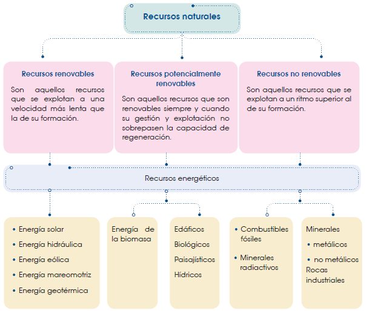

Seres vivos y su ambiente
Biomas del mundo
Un bioma o dominio bioclimático es una zona de la Tierra donde predominan un tipo de clima y una vegetación que favorecen el desarrollo de determinados seres vivos. Sus características determinan el desarrollo de la fauna, aunque la capacidad de movilidad de los animales hace que puedan extenderse fuera de la zona que les es propia.
Los biomas son regiones muy extensas, de miles o millones de kilómetros cuadrados, es difícil definir los límites entre biomas, ya que no están separados por fronteras concretas, sino por zonas de transición que presentan características intermedias.
Podemos distinguir, a grandes rasgos, los siguientes biomas terrestres:
las selvas tropicales
las sabanas
los desiertos cálidos
los bosques mediterráneos
los bosques caducifolios
las estepas
la taiga
la tundra
Las selvas tropicales
Se localizan, principalmente, en la franja comprendida entre los 10° de latitud N y S , a ambos lados de la línea ecuatorial. Las selvas tropicales se encuentran en América del Sur, América Central, el centro y el oeste de África, el sudeste de Asia, el este de la India y el noreste de Australia.
Presentan un clima tropical húmedo muy estable, con temperaturas medias cálidas, alrededor de los 27 °C, y una elevada humedad durante todo el año. La humedad varía según la altura de la vegetación y a lo largo del día. Esta nunca es inferior al 80%. Las precipitaciones anuales son abundantes, entre los 2000 y los 3000 milímetros o valores mayores.
La materia orgánica que va a parar a los suelos está formada, sobre todo, por restos de vegetales y se ve sometida a una rápida descomposición por parte de hongos y bacterias descomponedoras, favorecida por las condiciones climáticas de la selva; por tanto, hay un reciclaje rápido de los elementos nutritivos. De todos modos, las abundantes precipitaciones producen un lavado de los nutrientes (lixiviación), y los suelos son poco fértiles.
En cuanto a la vegetación, la selva es un ecosistema con gran diversidad de especies, que se distribuyen en varios estratos.
• Encontramos dos o tres estratos arbóreos, con ejemplares de gran altura (de 30-50 m). Las copas de los árboles forman una espesa capa y captan casi toda la luz que llega a la selva; por debajo de ellas queda una zona mucho más sombreada.
Los árboles tienen raíces superficiales, ya que la captación de agua se consigue fácilmente en la zona más superficial del suelo.
Las hojas, en general, son anchas, porque la elevada transpiración no es un problema para la vegetación de la selva; además, las hojas grandes permiten a las plantas obtener un buen rendimiento fotosintético.
• Encontramos una gran variedad de plantas epífitas, que viven sobre los árboles para acceder mejor a la luz, como las orquídeas.
• En el estrato más bajo crecen las lianas. Estas plantas trepan a los árboles, que utilizan como apoyo para buscar la luz.
• Las plantas herbáceas que se desarrollan en el suelo son escasas, ya que la falta de luz no permite un desarrollo óptimo.
La fauna es muy abundante y diversa. Se calcula que la mitad de todas las especies de seres vivos habitan en las selvas tropicales.
Las condiciones de estabilidad de este bioma han permitido unas adaptaciones muy específicas de vegetales y animales. Cada especie ocupa un nicho ecológico muy determinado y la competencia entre especies es casi inexistente; las relaciones interespecíficas forman una red muy compleja, llegando al nivel de clímax.
Debido a esta acoplación al medio, las especies presentan escasa capacidad de adaptarse a cambios fuertes; y las perturbaciones causadas, principalmente por las actividades humanas, son muy desestabilizadoras.
Las sabanas
Se localizan en los territorios comprendidos entre las selvas tropicales y los desiertos cálidos. Se extienden por grandes áreas de África y América del Sur, y otras áreas más reducidas en el sudeste asiático y en Australia.
El clima es tropical seco. Se caracteriza por la existencia de una larga estación seca y una estación húmeda bien diferenciadas. En el hemisferio norte, la estación seca comienza a finales de año y acaba en marzo o en abril, mientras que en el hemisferio sur la época seca va desde mayo hasta agosto o septiembre. Las temperaturas medias anuales están entre los 21 °C y los 29 °C. En la estación húmeda cae la práctica totalidad de las precipitaciones, comprendidas entre los 500 y los 1600 mm anuales.
Los suelos de estas zonas tropicales retienen poco o nada de agua y tienen muy poca materia orgánica.
La vegetación está formada principalmente por praderas de plantas herbáceas: leguminosas y gramíneas. Durante la época seca, las gramíneas sobreviven en forma de semillas, que germinan en la estación húmeda. Estas plantas desarrollan una red de raíces superficiales capaces de absorber la poca agua que queda en la superficie cuando llueve, también resisten los incendios y son frecuentes en la sabana. Además, se encuentran arbustos y árboles dispersos que no superan los 10 m, como los baobabs y las acacias en África. Se trata de árboles caducifolios, de hoja pequeña, y algunos presentan espinas en las ramas y el tronco para reducir la transpiración.
Entre los animales, predominan los grandes herbívoros, como las cebras, las jirafas y las gacelas. También destacan los grandes carnívoros, como los leopardos y los leones.
Los desiertos cálidos
Se localizan alrededor de los trópicos de Capricornio y Cáncer, donde se produce un descenso del aire seco procedente de otras latitudes, que origina unas condiciones áridas. En el hemisferio norte existen grandes desiertos en el norte de África, en Oriente Medio y en la zona fronteriza entre Estados Unidos y México. En el hemisferio sur, los desiertos se sitúan en Australia, en el sur de África y en la costa del Pacífico en Sudamérica.
El clima es muy seco y se caracteriza por las temperaturas medias anuales que oscilan entre los 20 °C y los 30 °C, y las fuertes oscilaciones térmicas entre el día y la noche. En verano, las temperaturas superan los 50°C. Las precipitaciones son escasas.
Los desiertos son tierras áridas y fuertemente erosionadas, por lo que la vegetación es escasa. Se encuentran plantas suculentas, del tipo de los cactus, con reserva de agua en el parénquima, sin hojas, con espinas y con abertura nocturna de estomas, para evitar la pérdida excesiva de agua.
Las raíces ocupan una extensa superficie, lo que les permite captar el agua de la lluvia. Algunas plantas pasan la mayor parte del año en forma de semilla resistente a la sequía, a la espera de condiciones favorables para germinar. La fauna presenta actividad nocturna y hábitos subterráneos, además de gruesas cubiertas del cuerpo para evitar la pérdida de agua.
Los bosques mediterráneos
Los bosques mediterráneos están presentes en las tierras que rodean el mar Mediterráneo y también en las costas de California, en la costa de Chile y en pequeñas zonas al sur de África y al sur de Australia.
El clima es templado con estación seca, se caracteriza por unos veranos calurosos y secos y por unos inviernos frescos o moderadamente fríos. Las temperaturas medias anuales se sitúan entre los 10 °C y los 18 °C.
Las precipitaciones anuales oscilan entre los 400 y los 1000 mm. Las lluvias se concentran, principalmente, en otoño y primavera y son muy irregulares. Las precipitaciones pueden ser de corta duración, pero, a menudo, tienen una gran intensidad.
Los suelos son fácilmente erosionables, si pierden la cubierta vegetal. La vegetación es esclerófila, formada por árboles y arbustos de hoja perenne, dura y pequeña. Las raíces son profundas, para captar la humedad que hay en el subsuelo.
Las encinas y los pinos son los árboles más representativos de este medio. También se adaptan los olivos y los cipreses. El estrato arbustivo mediterráneo es muy rico, encontramos arbustos como el madroño, la jaray el mirto. Algunos poseen hojas cargadas de esencias, como el romero, el espliego y el tomillo. El desarrollo de estos es posible porque el estrato arbóreo deja pasar mucha luz y permite su crecimiento.
En las zonas más áridas se desarrolla la maquia, que está formada por arbustos como la coscoja y el palmito. Las plantas son bajas, con hojas espinosas o con resinas de gusto fuerte y desagradable, que actúan como defensa contra los herbívoros.
La vegetación es pirófita, es decir, está adaptada al fuego. Este es un agente perturbador frecuente y constituye un factor limitante.
Es característico encontrar cortezas resistentes al fuego, como el corcho de los alcornoques; troncos con gran capacidad para rebrotar, como el caso de los robles; y frutos y semillas pirófitos, como las piñas, que, cuando se encienden, dispersan los piñones.
Como consecuencia de los incendios que se producen de forma natural y a causa de la actividad humana, se ha perdido una buena parte de los bosques de la zona mediterránea.
Estas tierras se han convertido desde hace siglos en campos de cultivo y zonas urbanizadas.
La fauna es variada y poco especializada, adaptada a los cambios frecuentes de las condiciones climáticas.
Encontramos numerosas aves, como el águila imperial ibérica.
Los bosques caducifolios
Se desarrollan en las zonas templadas del hemisferio Norte. Se caracterizan por tener veranos frescos, con temperaturas medias inferiores a los 20 °C, e inviernos moderadamente fríos, con temperaturas medias superiores a los 3 °C. El frío invernal es uno de los principales factores que determinan el tipo de biocenosis de este dominio bioclimático.
El clima es templado húmedo; las precipitaciones son regulares a lo largo de todo el año, pueden ser abundantes durante el verano y por ello no padecen sequía estival. Estas oscilan entre los 600 mm y los 1500 mm anuales. Acostumbran a producirse en forma de lluvias, aunque también son frecuentes las nevadas durante el invierno, sobre todo en las zonas más septentrionales. Los bosques caducifolios suelen tener nieblas, lo que favorece que se mantenga la humedad.
El suelo es fértil a causa de la acumulación de materia orgánica que se produce al caer las hojas de los árboles.
La vegetación está representada por bosques de hoja caduca, como los robles, las hayas y los castaños. Estos árboles tienen un ciclo vital muy marcado por las cuatro estaciones; el descenso de la temperatura es el factor que origina el período de reposo de los árboles, con la caída de las hojas.
El deterioro de las hojas provoca la acumulación de materia orgánica en el suelo, por lo que son suelos con abundante humus en los que la actividad de los descomponedores es muy importante. Sobre la hojarasca del suelo habita una gran variedad de hongos, líquenes y musgos.
También se desarrolla una rica fauna representada por muchas especies de artrópodos y gusanos. Entre las especies animales grandes destacan el zorro y el tejón, el que hiberna en la época fría. Muchas aves emigran en la época invernal.
Las estepas
Las estepas son propias de las zonas templadas continentales. Se extienden entre los 37° y los 52° de latitud norte, y entre los 30° y los 45° en el hemisferio sur.
El clima es seco y frío, las temperaturas medias presentan grandes contrastes: pueden alcanzar los 20 °C de media en invierno y llegar hasta los 20 °C en verano. Las precipitaciones oscilan entre los 250 mm y los 750 mm anuales, y en invierno se producen en forma de nieve.
El suelo posee una escasa capacidad de retención del agua.
Estas condiciones ambientales hacen que en las estepas no se desarrollen bosques, sino extensos prados con una gran riqueza herbácea. Por ejemplo, las praderas norteamericanas, las estepas eurasiáticas y la pampa argentina. Las plantas más abundantes son las gramíneas, estas se desarrollan en pocos meses, después se secan y quedan las semillas.
Estas extensas zonas de pastos favorecen la existencia de grandes herbívoros, como bisontes y caballos, capaces de realizar gran des desplazamientos para buscar alimento. También habitan pequeños roedores, que construyen madrigueras subterráneas.
La taiga
Es un dominio bioclimático formado por bosques de coníferas que ocupan las zonas boreales del hemisferio norte, entre los 50° y los 70° de latitud, también puede encontrarse hacia el sur en zonas montañosas.
El clima es frío y húmedo. Las temperaturas oscilan en un amplio margen, ya que los inviernos son fríos y extremadamente largos, con temperaturas medias inferiores a los 15 °C, durante varios meses, y los veranos son frescos, sin superar los 15 °C de media. Las precipitaciones (unos 400- 600 mm anuales) se producen principalmente en forma de nieve. El paisaje se mantiene blanco gran parte del año, pues las primeras nevadas caen a comienzos del otoño y la nieve no acaba de fundirse hasta finales de la primavera.
Durante el corto verano, solo se deshiela una capa muy superficial del suelo. Debajo de esta capa, el suelo está helado durante todo el año e impide la infiltración de agua en el subsuelo. Esta capa de suelo helado recibe el nombre de permafrost.
La vegetación está representada por las coníferas, que son árboles perennifolios entre los que se incluyen los pinos, las piceas y los abetos. Tienen la copa cónica, lo que les permite aguantar el peso de la nieve sin que se rompan las ramas; sus raíces son superficiales para absorber el agua de la parte superficial del suelo, que se deshiela en verano. Las hojas son aciculares, pequeñas y duras, resisten la congelación y transpiran muy poco. Sobre los troncos crecen poblaciones de líquenes.
A pesar del rigor del invierno, la fauna es muy rica y variada. Entre los mamíferos, se encuentran grandes herbívoros, que se alimentan de plantas acuáticas y brotes en verano, y de la corteza de los árboles en invierno; también pequeños carnívoros, como los visones y los armiños, que presentan un sistema de camuflaje consistente en cambiar el color del pelaje en verano e invierno; y algunos depredadores, como el lobo y el oso.
La tundra
La tundra se desarrolla por encima de los 70° de latitud norte. Está constituida por llanuras que se extienden por latitudes superiores a las de la taiga y que llegan hasta los hielos permanentes. En esta zona, los rayos solares llegan de manera oblicua y calientan muy poco la superficie terrestre.
El clima es frío y seco. La temperatura media anual es inferior a los 0 °C. Los inviernos son largos y extremadamente fríos, con temperaturas extremas inferiores a los 50 °C, mientras que los veranos son cortos y frescos, en los que raramente se superan los 10 °C. Las precipitaciones, normalmente en forma de nieve, no acostumbran a rebasar los 200-350 mm anuales.
Las características del suelo son similares a las de la taiga.
La vegetación está representada principalmente por musgos, líquenes y algunas especies de vida larga, como los sauces enanos, con crecimiento muy lento, ya que la actividad queda reducida solo al corto verano.
En cuanto a la fauna, habitan pequeños roedores, como lemmings, y renos, que migran entre la tundra y la taiga. Los animales de la tundra están adaptados a este tipo de clima, presentan largos pelajes, protegidos por capas gruesas de grasa.
Biodiversidad del Ecuador
¿Qué es biodiversidad?
Los primeros seres vivos se originaron hace unos 4000 millones de años y tenían una apariencia similar a las bacterias.
Desde ese momento, las formas de vida han ido evolucionando, han aparecido nuevas especies y otras se han extinguido.
En la actualidad, existen aproximadamente entre uno y medio y dos millones de especies diferentes que forman parte de la biósfera, aunque algunos científicos opinan que su número real es más elevado oscilando entre los cinco y los treinta millones, dependiendo de las fuentes.
Los seres vivos pueden clasificarse en tres dominios. El cuadro siguiente resume algunas de las características que identifican a los diversos reinos.
Dentro de cada reino encontramos una gran diversidad de formas de vida, tanto respecto a la morfología de los organismos como en la manera en que desarrollan sus funciones vitales.
La diversidad biológica, también denominada biodiversidad, hace referencia al número de especies diferentes que encontramos en un espacio determinado. El índice de diversidad más utilizado es el de Shannon y Weaver.
La biodiversidad es el resultado de la evolución de las especies. En condiciones de presión del ambiente, la existencia de individuos, de una misma especie, con características diferentes, ha hecho posible la adaptación a nuevas situaciones y la aparición de nuevas especies.
La biodiversidad es máxima en las selvas tropicales, donde se considera que puede habitar más de la mitad de las especies que actualmente pueblan la Tierra.
A lo largo de la historia de la biósfera, han desaparecido numerosas especies a causa de la aparición de otras mejor adaptadas a las condiciones del ambiente.
La biodiversidad es, la gran riqueza del planeta, un patrimonio que asegura el mantenimiento de la vida y la posibilidad de que esta continúe expresándose en toda su variedad. El descenso del índice de biodiversidad, la pérdida de suelo y la superpoblación humana son los problemas más graves a los que se enfrenta la Tierra, a medio y a largo plazo.
La biodiversidad puede calcularse mediante el índice de Shannon-Weaver:
\[ H = – pi \sum_{}^{} log2 pi \]
H = diversidad
H = abundancia relativa de una especie i en tanto por uno.
Por ejemplo, un campo en el que se cultive una sola especie tendrá una H = 0, puesto que log2 1 = 0.
En los arrecifes de coral se registran índices de biodiversidad elevados, con valores que oscilan entre 2,7 y 4,9.
La biodiversidad o diversidad biológica es la abundancia de especies distintas de un ecosistema, originada por sus variaciones genéticas y por las características del ecosistema donde viven.
Ecuador país megadiverso
Dentro de los países considerados megadiversos, posiblemente Ecuador sea el más pequeño, si tomamos en cuenta la relación entre biodiversidad y el área geográfica del país. Dentro de su territorio se ha determinado que existe una gran riqueza en especies animales y vegetales, e incluso entre estas, muchas son endémicas, es decir, son propias del lugar y no existen en ningún otro sitio. Tanto la topografía como los variados climas del país han permitido un desarrollo de una gran variedad de especies y de nichos en donde estas puedan vivir.
Fauna
En la actualidad, el Ministerio del Ambiente propone la campaña Protege Ecuador para cuidar un gran número de fauna silvestre que está en peligro de extinción por muchas razones; entre las principales causas podríamos citar la desfragmentación del hábitat natural, la sobreexplotación, etcétera.
En Ecuador encontramos 1252 especies de vertebrados que se encuentran bajo amenaza, de los cuales 217 son mamíferos, 238 son aves, 276 son reptiles y 521 son anfibios.
Flora
En lo que se refiere a plantas vasculares o plantas con flor tenemos 17 058 especies. Las orquídeas de nuestro país pertenecen a cuatro de las cinco subfamilias a escala mundial. Hay 4032 especies conocidas hasta el momento y se han clasificado y publicado 1714 especies endémicas, entre las cuales encontramos la orquídea más pequeña con 2,1 milímetros de dimensión.
Ecuador poseía 270000 kilómetros cuadrados de territorio nacional y tenía 132 000 kilómetros cuadrados de selva. Su desforestación es del 4% anual, y cada año son deforestados 3 000 kilómetros cuadrados.
La anfibiofauna del Ecuador es muy abundante y solo es superada por Brasil y Colombia. Sin embargo, teniendo en cuenta que, por cada unidad de área en Ecuador, se encontrarían dos especies por cada 1000 kilómetros cuadrados. Esta se convertiría en la zona más biodiversa de anfibios y ranas a nivel mundial.
Casi todas las especies nativas de plantas del Ecuador también existen en otros países de la región como Colombia y Perú.
A pesar de que las plantas tienen una gran capacidad de dispersión, una de cada cuatro especies es endémica del Ecuador.
Esto da un total de 4143 especies endémicas registradas y representan el 27% del total censado.
En estudios recientes de nuevas plantas, se ha determinado que de cada dos especies nuevas registradas una resulta ser endémica.
La zona más biodiversa del país está en la región Interandina, ya que presenta una gran variedad de ecosistemas únicos en el mundo.
Ecuador posee una flora envidiable en comparación a los otros países con territorios más amplios. En este país podemos encontrar alrededor de 20 000 tipos de plantas, de las cuales 5000 son orquídeas y otras especies raras y endémicas que se encuentran en peligro de extinción. Su conservación es indispensable, puesto que son recursos naturales y económicos muy importante para el país.
Importancia de la biodiversidad
Actualmente existe un mayor interés en conocer sobre la biodiversidad, pero esta acción se vuelve cada vez más difícil, debido a la desaparición de muchas especies.
Existen otras especies en peligro de extinción, pero aún podemos tomar medidas de conservación para salvarlas.
Como ya sabemos, hay una interdependencia muy fuerte entre los seres vivos y el hábitat en el que coexisten; por lo tanto, cuando alteramos el hábitat también estamos alterando a los seres que lo habitan. La pérdida de la biodiversidad a un largo plazo puede llevar a la desaparición incluso de nuestra especie.
La biodiversidad en Ecuador es afectada directamente por los factores que veremos a continuación:
• Importancia social
• Importancia económica
• Importancia ambiental
Importancia económica
El campo de la economía frente a un ámbito ambiental, depende directa o indirectamente de la biodiversidad. Según el Millenium Ecosystem Assessment, la biodiversidad es la base de todos los servicios ecosistémicos que apoyan y resguardan la economía.
Se han realizado innumerables estudios de investigación acerca de cómo la productividad primaria va de la mano con la biodiversidad y cómo el buen uso de los recursos nos brinda un mejor disfrute de los recursos naturales, genera la reducción de riesgos ecológicos y mejora la salud y la capacidad de resistencia frente a cambios abruptos del ambiente.
La conservación de la naturaleza es una prioridad para la economía mundial, en vista de que los servicios ecosistémicos son la base de todas las economías. Sin embargo, sabiendo todo sobre la importancia socioeconómica que brinda la biodiversidad, dentro de las políticas de desarrollo y las políticas económicas globales actuales, sus valores no se encuentran reflejados.
Se ha demostrado que la conservación de la biodiversidad mejora el rendimiento y las acciones de muchas actividades económicas.
Como ya sabemos, el mejor método para la conservación es eliminar la actividad humana a lo más mínimo posible o en ciertos casos restringirla en su totalidad en las zonas consideradas de alta biodiversidad. Estas zonas poseen especies de alta importancia por ser únicas y, generalmente, se encuentran en peligro de extinción, o porque generan cierto nivel de servicio cultural a la sociedad. La medida más efectiva y probada de lograr la conservación es administrar incentivos económicos, su objetivo es generar una consciencia, a través de ciertos esquemas de pagos ambientales, dentro de los cuales las comunidades que conservan estas zonas son las más beneficiadas.
Importancia ambiental
Como se mencionó en los anteriores puntos, existe una correlación entre la biodiversidad y los seres humanos. Nosotros la usamos en nuestra vida cotidiana, para la alimentación, la medicina, la construcción, etcétera. Sin embargo, nos proporciona otros servicios ambientales adicionales, como la captura del CO2 del ambiente para producir aire puro, también controla la erosión de los suelos, produce la regulación hídrica y potencia el turismo a nivel mundial.
La biodiversidad representa un recurso invaluable a nivel mundial y tiene un rol fundamental frente al funcionamiento y estabilidad de los servicios ecosistémicos.
Los servicios que nos proporcionan son innumerables; sin embargo, los más relevantes son el reciclaje de nutrientes dentro de las cuencas hidrográficas y, por ende, el ciclo del agua; la formación y retención de los suelos; la resistencia de las plantas frente a especies invasoras y plaguicidas, que podrían estar afectándolas directa o indirectamente; la polinización de las plantas; la regularización los ciclos climáticos; y la retención de CO2 para de ese modo atenuar la contaminación.
En el caso de los servicios de los ecosistemas, lo que importa es el número de especies presentes, así como establecer cuáles de ellas son más abundantes en el ecosistema.
A partir de una perspectiva ambiental y humana, la biodiversidad representa un capital, ya que constantemente la estamos usando para nuestro beneficio y constituye un gran aporte para las culturas a nivel mundial y una fuente de auxilio a las generaciones venideras.
Actividades humanas
La biodiversidad es la más afectada por las modificaciones inducidas por las actividades humanas. Entre estas actividades, las principales causantes de efectos severos son: el uso indiscriminado de los suelos, la alteración de los ciclos biogeoquímicos de la naturaleza, la fragmentación y la destrucción de los hábitats silvestres, la introducción de especies no nativas en sitios de alto interés ambiental y la alteración de las condiciones climáticas.
Hablando en un sentido más amplio, la biodiversidad, si se la trata de manera adecuada, resulta ser un recurso inagotable para el bienestar humano, mediante la variedad de servicios que ofrece y la capacidad de satisfacer todas las necesidades de los seres humanos. Sin embargo, los términos de funcionamiento ecológico y las funciones de los ecosistemas no han sido usados de una manera conjunta como debe ser.

Impactos ambientales
Se considera como impacto ambiental al conjunto de consecuencias que se dan en el medioambiente por efecto de la explotación de los recursos naturales.
El impacto ambiental depende principalmente de los siguientes factores: tipo de recurso explotado, tecnología que se aplica a la explotación, utilización del recurso y nivel de consumo de este.
Los principales impactos ambientales pueden clasificarse del modo siguiente:
Impactos atmosféricos
• Contaminación del aire
• Aumento de la temperatura
• Alteración del clima
Impactos edáficos
Contaminación del suelo:
• Erosión
• Desertificación
• Sobreexplotación
• Compactación
• Alteraciones en la sedimentación
• Alteraciones en la cubierta vegetal
Impactos hidrológicos
• Contaminación del agua
• Alteración de caudales
Impactos en la morfología del terreno
• Modificación de pendientes
• Creación de desniveles
• Hundimientos
Impactos visuales y acústicos
• Modificaciones en el aspecto del paisaje
• Aparición de ruidos debido al funcionamiento de máquinas o la circulación de vehículos
Impactos biológicos y ecológicos
• Alteraciones en el desarrollo de los seres vivos
• Modificaciones en el comportamiento de los animales
• Pérdida de hábitats • Reducción de la biodiversidad
• Modificación de las cadenas y las redes tróficas
• Regresión de los ecosistemas
Los principales impactos son:
La contaminación es la alteración de las propiedades del aire, del agua, del suelo, de los alimentos, etcétera. Se clasifican en:
• Contaminantes degradables: son aquellos que se degradan por procesos naturales, tanto físicos, como químicos o biológicos.
• Contaminantes no degradables: son aquellos que no se degradan por procesos naturales y, por tanto, es necesario reciclarlos.
Sus efectos son múltiples: daños para la salud del ser humano y de los animales, disminución en el crecimiento y expansión de la vegetación, extinción de especies, deterioro de edificios y monumentos, etcétera.
Los impactos producen numerosos efectos, muchos de los cuales son impredecibles. La intensidad del impacto de una actividad depende de las condiciones de fragilidad de la zona donde se localiza la actividad.
Existen diversos parámetros, mayoritariamente cualitativos, para la valoración de los efectos producidos por los impactos ambientales:
Relación causa-efecto
Según esta relación, los impactos pueden ser directos o indirectos. Por ejemplo, la tala de un bosque es un impacto directo, mientras que la erosión producida por una construcción es un impacto indirecto.
Persistencia
Se refiere a la duración del impacto. Distinguimos impactos temporales e impactos permanentes. Los ruidos producidos por la construcción de un edificio son temporales, pero los producidos por una fábrica pueden ser permanentes.
Reversibilidad
Hace referencia a la posibilidad de que, una vez producido el impacto, el sistema afectado pueda volver a su estado inicial. La contaminación de un río es reversible si se aplican medidas correctoras, pero si estas medidas no se aplican por su elevado coste, el impacto es irreversible.
Recuperación
El medioambiente puede recuperarse en mayor o menor grado de los efectos producidos por los impactos, según se puedan aplicar medidas correctoras. Por ejemplo, si una zona recreativa cambia su ubicación y se pueden aplicar estas medidas, podemos decir que el impacto es recuperable. En el caso que se elimine un paso natural para aves migratorias el impacto es irrecuperable.
Extensión
Este parámetro es en muchos casos cuantitativo, ya que tiene en cuenta la superficie afectada por un impacto. Por ejemplo, no tendrá las mismas consecuencias el trazado de una vía férrea que la instalación de una gasolinera.
Singularidad
En este aspecto se valora si el bien afectado es de gran interés o no, y si tiene condiciones especiales de protección. Es el caso de un parque o reserva natural que pudiera verse afectado por el trazado de una autopista.
Sinergia
Si dos impactos actúan conjuntamente, el impacto total es superior al producido por los impactos aislados. Este es el caso de la emisión de diversos contaminantes a la atmósfera. Un ejemplo es la implantación de una fábrica y sus procesos de producción.
Probabilidad de ocurrencia
Según la probabilidad de que un impacto tenga lugar, distinguimos impactos certeros, probables, improbables, etcétera.
Magnitud
Un impacto puede afectar en mayor o menor grado al sistema. Según esto, podemos decir que un impacto es compatible, moderado, severo o crítico. Por ejemplo, la construcción de una casa en el campo puede ser compatible, mientras que un incendio forestal de gran extensión es severo o crítico.
Estos criterios permiten efectuar una evaluación del impacto ambiental. La evaluación del impacto ambiental, según la normativa legal vigente, es el conjunto de estudios y sistemas técnicos que permiten estimar los efectos que la ejecución de un determinado proyecto, obra o actividad causa sobre el medioambiente.
Medidas correctoras frente a los impactos ambientales
Una vez producido el impacto ambiental, se evalúa y se establece si es necesaria la aplicación de diversas medidas correctoras para reducir los efectos negativos ocasionados.
En la siguiente tabla aparecen algunos ejemplos de medidas correctoras para impactos específicos.
La utilización del agua en el ámbito doméstico produce una modificación en su calidad debido a diversos impactos: el aporte de materia orgánica, microorganismos, detergentes, aceites, etcétera. La principal medida correctora que se aplica es la depuración de las aguas residuales antes de su vertido a los ríos y al mar.
La extracción de minerales y rocas produce la erosión del suelo, debido a la pérdida de la cubierta vegetal. Una de las medidas correctoras es la regeneración del suelo de la vegetación, una vez que las canteras o las minas hayan dejado de ser productivas. Otra medida sería la reconversión de estos terrenos en zonas turísticas con el debido acondionamiento.
Por su elevado valor comercial, muchas especies de peces se encuentran en peligro de extinción. Como medida correctora se puede promover el consumo de especies pesqueras que no son explotadas y que presentan las mismas cualidades nutritivas que las que se han estado consumiendo hasta ahora.
Muchas veces las medidas correctoras son insuficientes, o bien, no pueden aplicarse debido a su elevado costo. En general, la mejor solución consistiría en evitar que los impactos tuviesen lugar, aplicando medidas preventivas.
Estrategias y políticas para la conservación de la biodiversidad
En este capítulo se tratará la importancia de generar un marco favorable frente a la conservación de los ecosistemas para el desarrollo sustentable. En primer lugar, hay que tener en cuenta que es extremadamente necesaria la implantación de políticas, de estrategias y de instrumentos legales y económicos.
Para el diseño de estrategias se requiere cumplir un protocolo de pasos.
Primero, se recopila toda la información científica disponible de manera que se generen procesos participativos que logren asegurar una viabilidad política y técnica.
El principal objetivo, ante la generación de estrategias y políticas es contribuir con la manutención de los servicios ambientales, a través de la conservación de los ecosistemas que los generan.
Dentro de la generación de estrategias está el apoyo frente a la creación y la consolidación de áreas protegidas en sitios de alto interés ambiental y ecológico, mediante la implementación de mecanismos económicos para la compensación de los servicios ambientales, y que se pueda dar un mejor manejo y conservación a estas áreas.
Gestión ambiental
Muchos de los impactos y los riesgos ambientales a los que se enfrenta nuestra sociedad son causados por acciones y actitudes humanas encaminadas a satisfacer nuestras necesidades, sin tener en cuenta los desequilibrios que pueden provocar en el medioambiente. Debido a esto, la naturaleza ha sido explotada de manera insostenible, originando desequilibrios como:
• La contaminación del aire y del agua, que provoca graves problemas tanto en la salud ambiental como en la de los seres humanos.
• La disminución drástica de la biodiversidad por los desequilibrios en los hábitats de las especies.
• El aumento de la temperatura del planeta, debido al incremento de emisiones de gases con efecto invernadero.
Todo ello ha llevado a la necesidad de poner en práctica medidas de gestión del medioambiente que permitan un desarrollo basado en la sostenibilidad. La sostenibilidad, o desarrollo sostenible, plantea la necesidad de explotar los recursos naturales de manera que no se ponga en peligro su explotación futura y procurando que los impactos que se generan se reduzcan al mínimo.
Se llama gestión ambiental al conjunto de acciones y medidas que tienen como objetivo la explotación sostenible de los recursos y la defensa, la protección y la mejora del medioambiente.
Para que estas medidas sean efectivas, es necesario que se cumplan los siguientes requisitos:
• Las Administraciones, deben poseer una normativa adecuada sobre la gestión ambiental de su territorio.
• Deben existir estudios científicos que respalden las medidas de la gestión ambiental que hay que adoptar y que propongan soluciones alternativas a aquellas prácticas con mayores impactos.
• Todos los seres humanos deben actuar responsablemente tanto de forma individual como colectiva.
Las acciones que contempla la gestión ambiental pueden ser de dos tipos: acciones preventivas y acciones correctoras.
El Protocolo de Kioto es un acuerdo internacional establecido en 1997, que propone reducir las emisiones de gases de efecto invernadero, con el objetivo de luchar contra el cambio climático.
Sin embargo, a lo largo de esos años, la mayoría de los países aumentó sus emisiones en lugar de reducirlas. Ante estos incumplimientos, la Conferencia de Durban de 2011 pretendió definir un nuevo calendario de actuación. La conferencia finalizó con el acuerdo de no exigir nuevas obligaciones para los países firmantes hasta después de 2015.
Tratados y convenios ambientales internacionales
Al iniciar el siglo XX la preocupación por el medioambiente hace que se procedan a realizar varios tratados sobre cuestiones ambientales. Entre los más destacados se encuentran:
Convención Internacional para la Prevención de la Contaminación por Petróleo de los Mares (1954).
La Convención de París sobre la Responsabilidad de Terceras Partes en el Campo de la Energía Nuclear (1960).
La Convención Ramsar sobre Humedales de Importancia Internacional (1971).
En 1972, las Naciones Unidas convoca a una conferencia en Estocolmo para crear conciencia sobre las amenazas que pesan con respecto al medioambiente, esta conferencia llevó a la creación del Programa de las Naciones Unidas para el Medioambiente.
Desde aquí se producen varias iniciativas, sobre todo en la Unión Europea.
Los principales tratados firmados para la conservación del medioambiente en convenios mundiales incluyen:
La Convención sobre el Comercio Internacional en Especies amenazadas de Fauna y Flora (1973).
La Convención para la Prevención de la Contaminación del Mar (1974).
La Convención sobre la Contaminación Transfronteriza a Larga Distancia (1979).
La Convención para la Protección del Nivel de Ozono (1985).
La Convención para el Control de los Desplazamientos Transfronterizos de Residuos Peligrosos y su Eliminación (1989).
Aparte de la ONU hay otros organismos no estatales que participan en tratados y son de gran importancia a nivel mundial. Lo difícil de estos tratados es su aplicación y el control de su cumplimiento, a pesar de recibir periódicamente informes por parte de los países participantes. Existe el Tribunal Internacional de Justicia de las Naciones Unidas que desempeña un rol limitado como mediador entre los países en conflicto.
Tratados y convenios ambientales nacionales
No hay tratados ni convenios nacionales específicos. El marco que norma el cuidado al medioambiente en nuestro país es la Constitución del Ecuador de 2008. En nuestra constitución se reconocen los derechos de la naturaleza. En el documento del Programa del Buen Vivir realizado por el Gobierno nacional establecen los derechos de los seres humanos acompañados del equilibrio y sostenibilidad ambiental.
Constitución del Ecuador 2008
La Constitución del Ecuador incluye artículos destinados a la protección, al control y al cuidado del medioambiente como derechos de la Pachamama (madre tierra). Presentamos los más importantes a continuación:
En el Art. 14, capítulo segundo, sección segunda: Ambiente sano explica:
• Este escrito explica que se reconoce el derecho de la población a vivir en un ambiente equilibrado, que garantice la sostenibilidad y el buen vivir.
• Igual, manifiesta que tanto la preservación del ambiente; la conservación de los ecosistemas; la biodiversidad y la integridad del patrimonio genético del país; la prevención del daño ambiental; y la recuperación de los espacios naturales degradados son declarados de interés público.
En cuanto a la biodiversidad, en la Constitución de 2008, y según el Art. 71, se dice que: “La naturaleza o Pachamama, donde se reproduce y realiza la vida, tiene derecho a que se respete integralmente su existencia y el mantenimiento y regeneración de sus ciclos vitales, estructura, funciones y procesos evolutivos”.
En el título VII Régimen del Buen Vivir, capítulo segundo de la Constitución se habla de la biodiversidad y de los recursos naturales; el Art. 395 expone que: “El Estado garantizará un modelo sustentable de desarrollo ambiental equilibrado y respetuoso de la diversidad cultural, que conserve la biodiversidad y la capacidad de regeneración natural de los ecosistemas y que asegure la satisfacción de las necesidades de las generaciones presentes y futuras”.
Estos artículos definen cómo los ecuatorianos basan sus actividad en relación a la utilización de los recursos e incluye el cuidado apropiado al medioambiente. No obstante, existen varias acciones que todavía no cumplen todos los aspectos necesarios para no afectar al ecosistema.